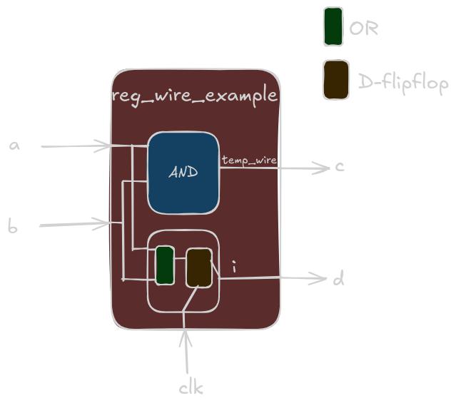

Verification with Verilog
Table of Contents
-
4-bit Counter DUT Verification
- wire vs. reg
- Blocking vs. Non-blocking
- Synchronous vs. Asynchronous
- Verification Plan
- Manual Verification
- Test Bench -
256-bit Counter DUT Verification
- Verification Plan
- Manual Verification
- Test Bench
- Tasks and Functions
- System Tasks and Functions
Why are we doing verification with Verilog?
The RTL is in Verilog. Generally the flow of learning is Digitals -> RTL intro through Verilog -> Verifying the RTL using a TB. So, it is only logical to try to verify using what's already known until we hit a point where what we know is not enough (or probably not efficient at all) anymore!
4-bit Counter DUT Verification
module dut_4_bit_counter(
input clk,
input rstn,
output reg[3:0] c_out //understand reg vs wire
);
always @ (posedge clk) begin
if(!rstn)
c_out <= 0; //synchronous active low reset. It's important to understand what this means.
else
c_out <= c_out + 1; //understand blocking vs non-blocking
end
A bit of revision on important verilog topics before proceeding with the verification of above DUT (Device Under Test)-
- wire vs reg
- blocking vs non-blocking
- synchronous vs asynchronous reset
HDLs operate in concurrancy. Languages like C that operate in procedural manner handle multiple assignments to a variable in a straight forward manner- the variable holds the last assigned value.
In case of Verilog, the value a variable holds at any instant is determined by:
- whether multiple drivers driving this variable. In which case, the final value will depend on the resolution functions.
- how the variable is synced to the clock
wire vs. reg
- wire and reg are two different data types defined in Verilog.
- wire represents a connection between two concurrent processes (physically, it'll manifest as a net between two components). It should be continously driven (in verilog, it is done using 'assign' keyword), and it can't store values. It can be driven by multiple drivers simultaneously and the value on the wire at any instant is determined by the underlying resolution function(verilog provides option to decide strength of the driver).
- reg is a 1-bit 4-state variable. It is generally used to store data.
- It's not allowed to drive a reg type variable using 'assign' keyword. Instead, reg variables are assigned values using = or <= within procedural blocks (always, initial, task, function).
- A reg type will synthesize to a register only if it's linked to edge of clock. If it is linked to ALL the input signals and not clock, it'll synthesize to a combinational circuit. However, if all paths are not defined, it can inadvertently infer a latch, which is often undesirable.
This code would be interpreted at synthesis level (without any optimizations), refer below block diagram:
module reg_wire_example( input clk, input a, input b, output c, output d ); wire temp_wire; reg i; // 1. Continuous assignment to wire 'temp_wire' assign temp_wire = a & b; // 2. Procedural block (sequential logic) always @(posedge clk) begin i <= a | b; end // 3. Assign 'c' (output) from 'temp_wire' (wire) assign c = temp_wire; // 4. Assign 'd' (output) from 'i' (reg) assign d = i; endmodule
The below code shows how reg might cause inadvertent inferred latch:
module combinational_using_reg (
input a,
input b,
input sel,
output reg out_assign_all_paths, // Declared as reg as it's assigned in an always block
output reg out_default_assign,
output reg latch_out_1,
output reg latch_out_2
);
// --- Method 1: Assigning in all if/else branches ---
always @(*) begin // Sensitive to all inputs (a, b, sel). 'always_comb' in SystemVerilog.
if (sel == 1'b1) begin
out_assign_all_paths = a & b; // Assignment for sel = 1
end else begin
out_assign_all_paths = a | b; // Assignment for sel = 0 (covers all paths)
end
end
// --- Method 2: Providing a default assignment ---
always @(*) begin // Sensitive to all inputs (a, b, sel). 'always_comb' in SystemVerilog.
out_default_assign = a ^ b; // Default assignment (e.g., for the 'else' case or unhandled cases)
if (sel == 1'b1) begin
out_default_assign = a + b; // Overrides default if sel is 1
end
// No 'else' needed here because 'out_default_assign' already has a value.
// If sel is 0, the default assignment (a ^ b) will be the final value.
end
//Inferred latch case 1
always @(*) begin // Sensitive to all inputs (a, b, enable)
if (sel == 1'b1) begin
latch_out_1 = a & b; // latch_out_1 is assigned only when enable is high
end
// IMPLICIT ELSE: What happens to 'latch_out_1' when 'sel' is 0?
// It retains its old value. This behavior implies a latch.
end
//Inferred latch case 2
always @(a) begin // Sensitive to only one input
if (sel == 1'b1) begin
latch_out_2 = a & b; // Assignment for sel = 1
end else begin
latch_out_2 = a | b; // Assignment for sel = 0 (covers all paths)
end
/*Since the block only re-executes when a changes, if b or sel change without a changing,
the current value of latch_out_2 will hold its previous value.
This "holding" behavior is precisely what defines a latch.*/
end
endmodule
Blocking vs. Non-blocking
- Blocking and Non-blocking are type of assignments in verilog (or Systemverilog).
- Blocking assignment (=) is also called procedural assignment and behaves similar to how assignment is done in languages like C. RHS is evaluated, assigned to LHS and then the code moves to the next line. This has less relevance in hardware design as this could lead to race conditions: unwanted sequential dependency of variables which might not reflect in the actual hardware (or might not be the intent to begin with). For example:
module blockingexample ( input in_data, input clk, output reg out1, output reg out2 ); always @(posedge clk) begin // Blocking assignments out1 = in_data; // out1 gets in_data's value immediately out2 = out1; // out2 immediately gets the *new* value of out1 // (which just got in_data's value) end endmodule /*If this were synthesizable sequential logic, it would effectively model out2 always being the same as in_data in the same clock cycle, making out1 redundant or effectively out2 = in_data. This is not how two cascaded flip-flops work.*/ - Blocking assignments are typically used to model combinational logic within an always @(*) or always_comb block (read about always_comb an SV construct), or for calculating intermediate values in test benches.
- When a non-blocking assignment is encountered, the RHS is evaluated immediately, but the actual assignment (update) to the LHS variable is scheduled to occur at the end of the current time step, after all other blocking assignments and RHS evaluations in all active always blocks for that time step have completed.
- Non-blocking assignments are mandatorily used for modeling sequential logic (flip-flops, latches) in always @(posedge clk) or always_ff blocks.
module nonblockingexample ( input logic in_data, input logic clk, output logic out1, output logic out2 ); always @(posedge clk) begin // Non-blocking assignments out1 <= in_data; // out1 is scheduled to get in_data's value out2 <= out1; // out2 is scheduled to get out1's *current* value // (which is from the *previous* clock cycle, not the new scheduled one) end /*This code correctly models two cascaded flip-flops: * out1 will get the value of in_data from the current clock cycle. * out2 will get the value of out1 from the previous clock cycle. This is exactly how two flip-flops chained together behave.*/ endmodule